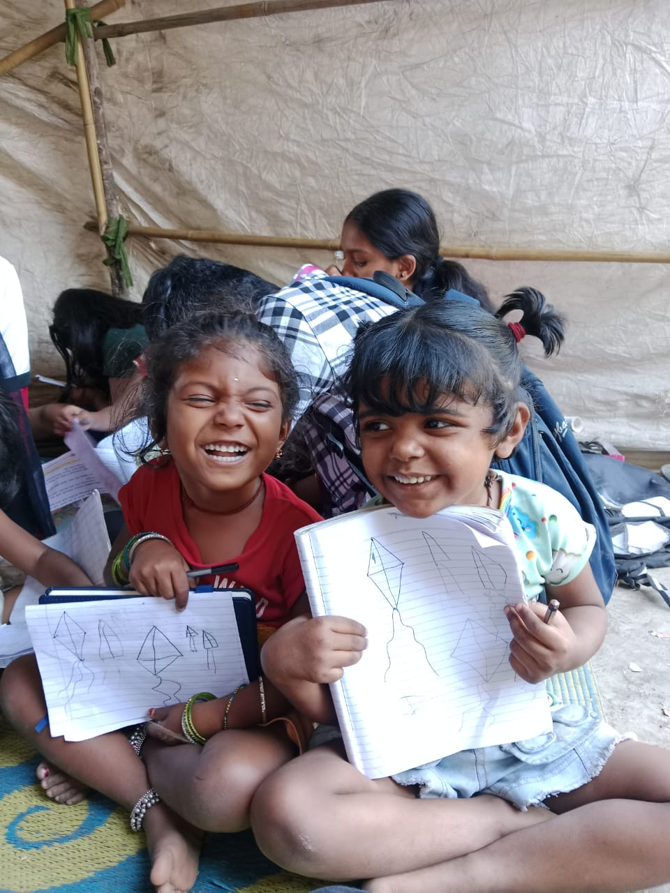
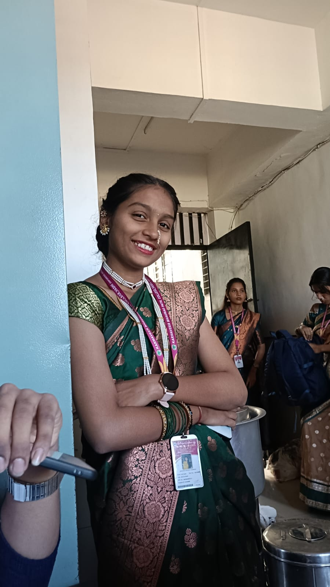

Rayat Shikshan Sanstha's
Karmaveer Bhaurao Patil College, Vashi
[ Empowered Autonomous ]
National Service Scheme
D-58
"Not Me But You"


Rayat Shikshan Sanstha's
[ Empowered Autonomous ]
D-58
"Not Me But You"
On the occasion of Shiv Jayanti, our NSS unit launched a meaningful initiative called “One Step for Education” in our adopted village Turbhe Gaon. This initiative reflects our commitment towards social responsibility and community development through education.
The primary aim of this project is to support children who lack proper access to educational resources and guidance. Many children in rural areas face challenges such as limited study materials, lack of academic support, and low awareness about the importance of education.
To address this, our volunteers regularly visit the village three days a week and conduct structured teaching sessions. These sessions focus on strengthening basic academic skills like reading, writing, and understanding core subjects in a simple and practical way.
Beyond academics, we aim to create a friendly and encouraging learning environment where children feel comfortable asking questions and expressing themselves. This helps in building their confidence and developing a positive attitude towards education.
Along with teaching, we also conduct small tests to track their progress and understand individual learning levels. Interactive activities, games, and storytelling methods are used to make learning more engaging and enjoyable for the children.
This initiative is not only focused on students but also on the community. We actively spread awareness among parents and villagers about the importance of education and encourage them to support their children's academic journey.
Through consistent efforts, dedication, and teamwork, “One Step for Education” is helping bring a positive transformation in the lives of children and contributing towards a more educated and empowered society.
📖 “Small steps taken together can create a big change in society.”

Volunteers teach children fundamental subjects like basic mathematics, reading, and writing using simple and understandable methods.
Short tests are conducted to understand the learning level of each child and track their improvement over time.
Educational games, storytelling, and group activities are used to make learning interesting and interactive.
Volunteers motivate students to continue their education and guide them about the importance of studies and future opportunities.
Volunteers interact with parents and villagers to create awareness about education and the importance of supporting children's learning.
Consistent visits (3 days a week) ensure continuity in learning and help build trust between volunteers and the community.
Through regular visits, we have seen small but meaningful improvements in the children. Some students who were earlier not able to read or write properly are now slowly improving with practice.
The children have become more comfortable with our volunteers and now participate more actively during teaching sessions and activities.
Our consistent presence in the village has helped build a connection with the students, which makes learning easier and more engaging for them.
Parents are also becoming slightly more aware about their children’s education and are showing interest in sending them regularly to school and our sessions.
While the change is gradual, we believe that these small steps will create a positive impact over time.
📖 Change doesn’t happen in one day, but every effort counts.
Regular visits ensure continuous learning and strong connection.
Planned teaching improves discipline and understanding.
Strong relationship between volunteers, students, and villagers.
Our aim is to continue this initiative regularly and provide consistent support to the children of Turbhe Gaon in their education.
We want to help them build a strong foundation in basic subjects so that they can perform better in school and continue their studies without difficulty.
Rather than making big changes overnight, we believe in steady and continuous efforts that can slowly improve the learning environment for these children.
In the coming time, we hope to involve more volunteers, maintain regular teaching sessions, and reach more students who need support.
📖 Consistency matters more than big promises.

Atharva Ananda Kadam
SY NSS Volunteer
Khushi Ramesh Shedge
SY NSS VolunteerDetailed records of our regular teaching sessions in Turbhe Gaon, including student participation, learning progress, and activities conducted during each visit, will be updated here.
Download the PDF